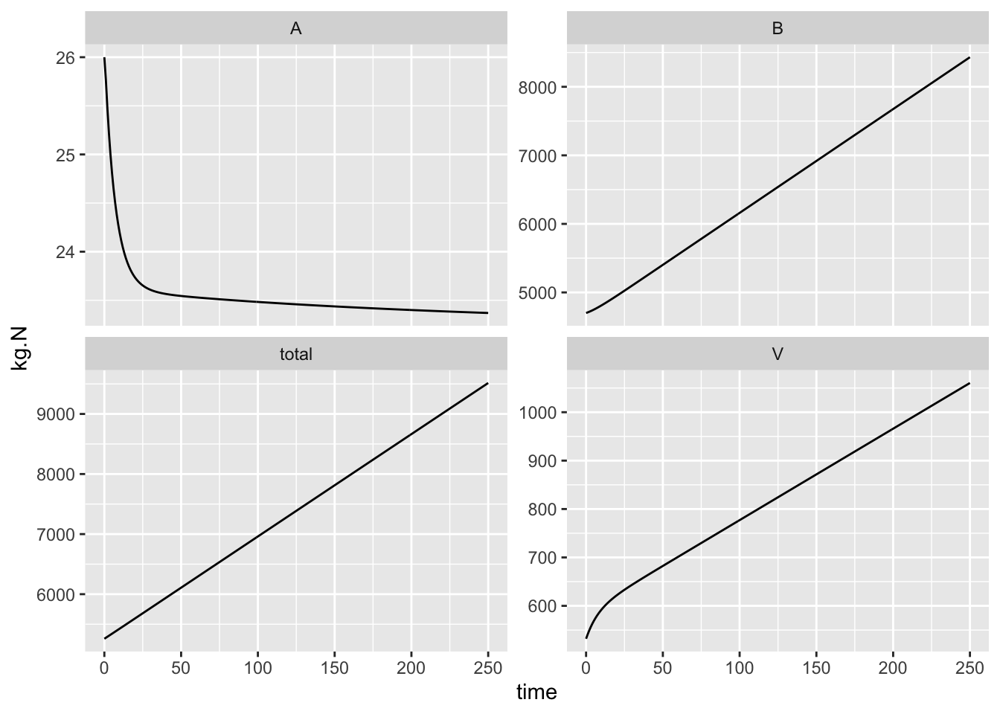

Remember that following our template, we have a maximum rate times resource and self limitation, and inhibition. Currently, we have \[\frac{dV}{dt} = a_{1}AV - a_{2}V - a_3 V\] and rearranging, \[\frac{dV}{dt} = \left(a_{1}A - a_{2} - a_3\right) V\] If we add self-limitation, we get \[\frac{dV}{dt} = \left(a_{1}A - a_{2} - a_3\right) V \left(1-\frac{V}{K}\right)\] where \(K\) is the maximum amount of live vegetation that the ecosystem can sustain, in kg,N,ha\(^{-1}\). We don’t know exactly what that is yet, but we may be able to get estimates from the literature. For know we can pretend that it is just a bit more than was there in the mid-1970s, say, \(K=600\).
Now we rewrite the R function with self-limitation.
bormann2 <- function(t, y, p) {
# time, vector of state variables and parameters must be in this order
# we can use as.list for both the state variables and parameters
# a1 = uptake
# a2 = loss from veg to avail
# a3 = loss from veg to bound
# a4 = net mineralization
# a5 = export from avail
# a6 = export from bound
with( as.list( c(y, p) ), {
dV.dt <- (a1 * A - a2 - a3) * V * (1-V/K)
dA.dt <- i1 + a2 * V + a4 * B - a1 * A * V - a5 * A
dB.dt <- i2 + a3 * V - a4 * B - a6 * B
# Here we return a list whose first element is the vector of
# rates of change for the state variables. The first element must be these rates,
# in the same order as the state variables in y
# The second element is the total N in the system
return(list( c(dV.dt, dA.dt, dB.dt),
total = V + A + B
) )})
}We can add a new parameter to our vector of parameters, and then solve our new function bormann2 for the same time interval, and plot it.
params["K"] <- 600
out <- ode(y = initial.state, times=time, func=bormann2, parms = params)
outg <- gather(as.data.frame(out), key=State.var, value=kg.N,
V, A, B, total, -time,
factor_key=TRUE)
ggplot(outg, aes(time, kg.N)) + geom_line() + facet_wrap(~State.var, scale="free_y")Figure 3.4: Dynamics of an N budget, assuming density-dependence in vegetation with a fixed carrying capacity (Bormann et al. 1977).
Unlike our first model of this system, we see state variables on curved trajectories and perhaps reaching asymptotes. This makes greater intuitive sense - over the short term, it is the same as the simple N budget shown in (???) and it also shows a reasonable longterm trajectory for the vegetation, and the predicted consequences for the available and bound pools.